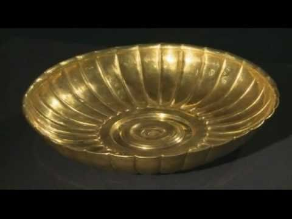

Hidden Treasures of Afghanistan in Australia


Priceless treasures from the sands of history in Melbourne Museum. It will take centre stage at Queensland Museum from Thursday 5 September 2013 to Monday 27 January 2014.And what a stage it will be. This exhibition will present more than 230 priceless artefacts and treasures from the pages of Afghanistan's tumultuous history, most uncovered at the four most important of its 1500 archaeological sites ( Begram, Tillya Tepe, Tepe Fullol and Aï Khanum) and representing the period between 2,000 BC and AD 20 Some of history's greatest names have an association with Afghanistan. Think Marco Polo, Genghis Khan and Alexander the Great Click on Read More...
Hidden Treasures of Afghanistan in ('USA')
Afghanistan's Dazzling National Treasures—Hidden for 25 Years—Presented at Metropolitan Museum. The exhibition is arranged by archaeological site and features new maps and media specially commissioned by the National Geographic Society. The display begins with objects from Tepe Fullol in northern Afghanistan. In 1966, farmers discovered the first evidence of a Bronze Age civilization in the region. The nearby Oxus riverbed may have provided the gold used to create the artifacts found in a burial cache at the site. A highlight is a gold bowl fragment dating around 2000 B.C., depicting bearded bulls, an image familiar in the art of MesopotamiaClick on Read More....
Hidden Treasures of Afghanistan in Britain
'Priceless' Afghan treasures star in new British Museum exhibition after being 'hidden for 25 years'Dozens of priceless treasures feared destroyed during the Afghanistan civil war will go on display at the British Museum after being kept hidden in secret vaults for 25 years.Crown, Tillya tepe, gold, 1st century BC ñ 1st century A.D. This crown was found in the tomb of a high-ranking nomadic woman Now more than 200 of the artefacts form part of a new British Museum exhibition, titled Afghanistan: Crossroads of the Ancient World, which was launched on Monday.The star attraction is said to be a solid gold “flat pack” crown, described as one of the “world’s most beautiful and priceless objects" Click on Read More...
Treasures of Afghanistan in San Francisco
Thierry Ollivier, Musee Guimet, National Museum Of Afghanistan. Archaeologist Fredrik Hiebert knew the safe contained a remarkable treasure of Afghanistan's history, but he didn't know how remarkable. No one in the room did that day in 2004."It was full of gold," Hiebert recalled as he sat in the Asian Art Museum, which is exhibiting the safe's contents and other Afghan treasures in a major show that begins Friday. "It was unbelievable." The San Francisco exhibition, "Afghanistan: Hidden Treasures From the National Museum, Kabul," is a tribute to a country whose culture has withstood a 30-year onslaught.By themselves, these priceless objects, some of which go back more than four millennia, are worthy of viewing Click on Read More...